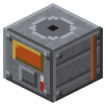

Контактный аппарат
Эпоха 3Электричество

стоит

в работе
Сера + 500 mB воды + 100 mB пара → 500 mB серной кислоты за 5 с.
Сера + 500 mB воды + 100 mB пара → 500 mB серной кислоты за 5 с. Платиновый самородок — катализатор, 1 на 64 партии.
Параметры
| Эпоха | 3 — Электричество |
|---|---|
| Многоблок | нет |
| Привод | пар |
| Баки, mB | 8000, 4000, 8000 |
| что делает | сера + вода -> серная кислота на платине, вчетверо быстрее камеры |
| энергия на входе | пар 100 mB/партию |
| из чего | бак BC, теплопроводник IC2, шлаковата, поршень, платина, монель, чертёж |
Числа
| контактный аппарат: вода | 500 mB |
|---|---|
| контактный аппарат: пар | 100 mB |
| контактный аппарат: серная | 500 mB |
| контактный аппарат: партия | 100 тик |
Кто кормит
- dustSulfur ← Химический реактор, Реактор высокого давления
- steam ← Парогенератор АЭС
- water ← Артезианская скважина
Кого кормит
- Серная кислота → Химический реактор, Реактор высокого давления, Смеситель, Кирпичная реторта
Как устроено (из кода)
Контактный аппарат (контактный способ, платиновый катализатор - как на первых заводах 1870-х): сера сгорает в SO2, на платине окисляется до SO3, его поглощают и разбавляют водой. Партия: 1 сера + 500 mB воды + 100 mB пара (воздуходувка) -> 500 mB серной кислоты, 5 с. Платина: 1 самородок на 64 партии. Против свинцовой камеры: вчетверо быстрее, больше кислоты, без селитры. Слоты: 0 сера, 1 платина. Баки: 0 вода, 1 пар, 2 серная кислота (выход).